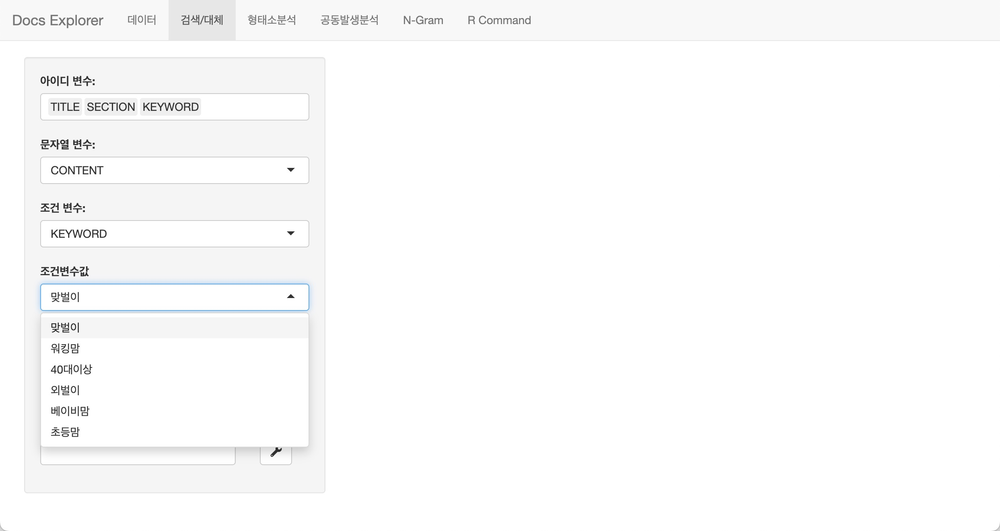

Explore Documents
explore_docs.Rmd텍스트 데이터 탐색
데이터 분석을 위해서 데이터를 탐색(EDA, Exploratory Data Analysis)하는 것처럼 텍스트 데이터 분석 역시 데이터의 탐색이 필요합니다.
이 작업을 통해 분석가는 주관적인 판단으로 데이터의 품질을 정성적으로 느끼거나, 데이터를 분석하기 위한 실마리를 찾습니다.
데이터 품질의 인식은 데이터 정제의 패턴 룰을 발견하고, 필터링 룰을 도출하여 분석 대상 문서를 선별하는 작업의 기초가 됩니다.
Text Data Explorer
bitNLP에는 buzz라는 데이터를 제공하는데 다음과 같은
변수를 가지고 있습니다. 변수 CONTENT를 대상으로 데이터를
탐색해야 합니다.
names(bitNLP::buzz)
[1] "KEYWORD" "SRC" "SECTION" "CRAWL_DT"
[5] "PUBLISH_DT" "URL" "TITLE" "CONTENT"
[9] "DOC_KEY" "PUBLISH_ID" "CLICK_CNT" "LIKE_CNT"
[13] "SEARCH_KEYWORD"bitNLP는 텍스트 데이터를 탐색할 수 있는
Text Data Explorer를 제공합니다.
Text Data Explorer는 Shiny 앱으로
explore_docs() 함수로 호출합니다.
library(bitNLP)
data(buzz)
explore_docs()Text Data Explorer 기능
데이터 구조 파악하기
Text Data Explorer가 실행되면 다음과 같은, 분석할
데이터를 선택하고, 선택한 데이터의 변수 구조를 알수 있는
데이터 탭이 보여집니다. 현재는 데이터 프레임 객체가 buzz
하나라서 자동으로 해당 데이터가 선택되었습니다.
분석할 데이터 프레임 객체를 선택하면, 오른쪽 테이블에서는 데이터 프레임 객체의 변수 이름과 데이터 유형이 출력됩니다.
그리과 좌측에는 텍스트 데이터를 편집했을 경우, 데이터를 저장하는 기능의 위젯이 위치합니다.
데이터 탐색과 정제하기
텍스트 데이터를 탐색할 때 특히 하나의 문서가 아니라 여러 개의 문서들로 구성되었을 때, 문서를 하나씩 패치하여 읽어나가거나 정규표현식을 만족하는 문서만 추려서 하나씩 패치하면서 살펴봅니다. 경우에 따라서는 문서 내에서 오기된 단어들을 수정하기도 합니다.
이러한 작업을 콘솔에서 수행하기에는 여간 성가신 것이 아닙니다. 또한 긴 문장으로 구성된 텍스트는 콘솔에서는 일부만 표현되기도 합니다.
Text Data Explorer는 텍스트 데이터를 탐색하고 정제할 수
있는 간단한 기능을 제공합니다. 이 기능은 검색/대체 탭을
사용합니다.
탐색을 위한 변수 선택
데이터를 탐색하는 방법을 정의하는 과정입니다. 데이터 프레임 객체에서 대상 변수를 선택하는 과정입니다.
다음과 같은 변수를 선택합니다.
- 아이디 변수
- 패치하면서 출력되는 문서를 식별하거나, 보조적 정보를 표현활 변수들을 선택합니다.
- 문자열 변수
- 탐색할, 텍스트 분석의 대상이 데는 문서를 담은 변수를 선택합니다.
- 조건 변수
- 탐색할 문서들 중에서 특정 조건에 해당하는 하위 집합을 정의할 변수를 선택합니다.
- 범주형/문자형 데이터가 대상이됩니다.
- 조건변수값에서 해당 변수에서 탐색한 수준(levels)을 선택합니다.
다음 그림은 buzz의 CONTENTS 변수를
탐색하는데, 그 대상은 KEYWORD가 맞벌이인
데이터를 대상으로 합니다. 화면에는 CONTENTS와 함께
TITLE, SECTION, KEYWORD를 표시할
것입니다.



형태소분석을 이용한 데이터 탐색
형태소분석 탭의 기능은 장문의 본문을 일일이 읽기 어려울
경우에 유용한 기능입니다. 원문과 함께 명사만 추출한 정보를 제공해서
명사를 탐색하면서 문장의 전체 맥락을 속성으로 이해할 수 있습니다.
몇몇 개의 문서를 탐색하는 경우에는 문제가 발생하지 않지만, 하루 종일 수백, 수천개의 문서를 탐색하면서 텍스트 분석의 실마리를 찾아야하는 경우에 천사와 같은 기능을 제공해줄 것입니다.


R 명령어 실행
bitNLP 패키지에서 실행한 Shiny 앱은 모달(Modal) 창을 띄웁니다. 이것은
앱이 종료되기 전는에 R 콘솔을 사용할 수 없다는 것을 의미합니다. 그래서
Text Data Explorer는 간단한 R 스크립트를 수행할 수 있는
기능을 구현했습니다.
R Command 탭은 간단한 R 스크립트를 수행할 수 있습니다.
다음 예제는 Text Data Explorer를 사용중에
get_spacing()으로 문서의 띄어쓰기를 보정하는
예시입니다.